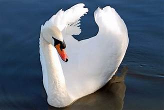
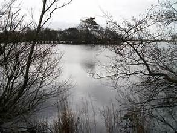

Le lac de Glasfryn
Une fois, un sorcier avait une fontaine aux environs de Llangybi. Un couvercle devait être posé sur la fontaine toujours, sinon l'eau inonderait les maisons de la région. Grasi appearing as a swan Personne ne puisait de l'eau du puits du sorcier de peur qu'ils n'oublient de remettre le couvercle. Pendant une période de sècheresse, les agriculteurs voisins craignaient qu'il n'y ait pas assez d'eau pour eux et leurs animaux. Le père de Grasi alla demander au sorcier de puiser de l'eau de son puits. Le sorcier réfléchit et décida enfin de laisser les agriculteurs utiliser le puits si Grasi le gardait et prit soin de remettre le couvercle en place lorsque quelqu'un viendrait chercher de l'eau.
Grasi était une fille paresseuse et n'aimait pas son nouveau travail. Pendant les premiers jours, Grasi était ravi. Elle pouvait s'allonger sur la colline sous le soleil, sans rien d'autre à faire que de remettre le couvercle. C'était beaucoup mieux que d'aider sa mère à balayer et faire la vaisselle.
Location of Glasfryn Lake from the slopes of the EiflUn jour, un ami est venu jouer avec Grasi et les deux copines ont commencé à cueillir des myrtilles et s'éloigner ainsi du puits. Au bout de quelques heures son amie est rentrée chez elle mais Grasi a continué de cueillir des myrtilles jusqu'à ce qu'elle soit épuisée. Puis elle s'est endormie.
Quand elle s'est réveillée, le soleil était couché. Elle se souvint soudain de la fontaine. Elle courut vivement à travers la bruyère, puis resta immobile en se frottant les yeux. La fontaine n'était pas là, juste un grand lac. Elle a commencé à pleurer.
 Location of Glasfryn Lake from the slopes of the Eifl
Location of Glasfryn Lake from the slopes of the Eifl
Puis, soudain, elle sentit une main sur son épaule. Le sorcier était revenu. « Je vais te punir pour ce que tu as fait, fillette paresseuse », dit le sorcier. « Puisque tu n'as pas de maison maintenant, tu dois vivre ici pour toujours. Ta maison était là où se trouve le lac. Tu dois donc vivre dans le lac ou sur le lac. » Le sorcier leva son doigt et se gratta la tête. « Je sais », dit-il. Tu seras un cygne nageant à la surface de l'eau jour et nuit jusqu'à ta mort. » Et voilà l'histoire de Grasi. Elle a nagé sur le lac pendant de nombreuses années et même aujourd'hui, certains disent qu'ils entendent de temps en temps Grasi hurler du fond du lac de Glasfryn.